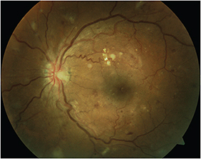

A 55-year-old male patient from a rural county in North Carolina with a 10-year history of diabetes visited his local primary care physician (PCP). This man had brittle diabetes; his most recent HbA1c was 11.8%. He has concomitant hypertension and hypercholesterolemia. He had not seen an ophthalmologist in several years, as he had no visual complaints. He told his doctor that he could not afford a specialist’s co-pay and if his eyes had to be dilated, he wouldn’t be able to get home because he had no one to drive him.
Because the patient’s PCP had the necessary equipment, he offered the patient a diabetic retinopathy evaluation in the office that day. The patient agreed, and within 10 minutes a technician had imaged the posterior pole of both retinas (where most of the visually significant diabetic retinopathy (DR) occurs) with a non-mydriatic fundus camera. Within 24 to 48 hours, a retinal specialist had interpreted via telemedicine the retinal photographs and diagnosed proliferative DR in both eyes of the patient.
Although the patient, who was notified quickly of his condition, had no visual symptoms, he understood the importance of the immediate referral to a local ophthalmologist. There he received vision-preserving panretinal photocoagulation in both eyes.
This vignette is not uncommon in our North Carolina Diabetic Retinopathy Telemedicine Network, a two-year project funded by The Duke Endowment. The Network brings DR evaluation via telemedicine to primary clinics in rural North Carolina, where current DR evaluation rates are as low as 13%. Telemedicine is an emerging strategy using digital retinal imaging with remote expert interpretation. Introducing this technology in the primary care physican’s office could substantially improve early detection of retinopathy and ultimately reduce rates of blindness among patients with diabetes. I’ll describe how it works.
DR is the leading cause of blindness in working-age Americans. Recent estimates reveal that 4.2 million people, or 28.5% of individuals with diabetes older than 40 years, have DR; 655,000 (4.4%) of these individuals have advanced retinal disease that could lead to vision loss.1 We know that early detection of DR is crucial to preventing blindness. Pharmaceutical, laser and surgical therapies have dramatically reduced the disease’s progression, and timely intervention can reduce the risk of severe vision loss by more than 90%.2
Although annual diabetic retinal evaluations are recommended by the AAO, American Diabetes Association, the National Committee for Quality Assurance, the National Eye Institute, the Centers for Disease Control and Prevention and the World Health Organization, overall retinal evaluation rates for DR remain less than 50% in the United States,3 and far less in rural communities. As the prevalence of diabetes is projected to increase from 25 million Americans to 125 million Americans by 2050,4 the number of patients requiring annual retinal evaluations will increase exponentially.
We can now harness new technologies, such as telemedicine, to improve DR evaluation rates. While many patients with diabetes will not or cannot see an ophthalmologist regularly, they will see their primary care physician, on average, three to four times annually. Therefore, introducing telemedicine technology at the point of care of the PCP could substantially reduce barriers to access and improve rates of early detection of DR.
In the primary care office where this equipment can become available, a trained clinical staff member can take a retinal photograph with a non-mydriatic camera. The images can be sent securely over a HIPAA-compliant, Internet-based network to a retina specialist, who can classify the retinal images according to the severity of retinopathy (Figure). The retinal specialist can transmit a report detailing the findings and referral recommendations to the originating PCP within 24 to 48 hours, and that report can be immediately incorporated into the patient’s electronic medical record.
Figure. Non-mydriatic fundus photo of the left eye. Patient diagnosed with diabetic retinopathy through the telemedicine program.
Internationally, the United Kingdom has implemented the best example of a widespread successful DR telemedicine program, which ensures that nearly 90% of all patients with diabetes are assessed for diabetic eye disease.5 Announced in the 2003 Delivery Strategy for the National Service Framework for Diabetes, the program was implemented across England between 2003 and early 2008. Screening is now delivered by more than 80 local programs. The result? In the United Kingdom, diabetic retinopathy is no longer the leading cause of vision loss among its working-age population.6
In the United States, the largest DR telemedicine program is in the Veterans Health Administration, which has successfully performed more than 1 million imaging sessions on veterans with diabetes over the past five years.7,8 Numerous other local telemedicine DR assessment programs are being developed in other regions of the United States.
Locally, we have demonstrated the success of a telemedicine network for DR evaluation at the University of North Carolina at Chapel Hill. Over the past five years, we have collaborated with three primary care clinics with a diverse patient and payer mix in the University’s family medicine, general internal medicine and endocrinology departments.
After digital retinal photographs are obtained, the images are securely transmitted to me over the Internet via a HIPAA-compliant secure network. Based on the degree of DR, the patients are given one of two medical options:
• A repeat follow-up retinal imaging in the primary care clinic is scheduled for those individuals with no DR or mild to moderate DR with no macular edema.
• An immediate referral is made to a retinal specialist for further management for any patient with an ungradable image, findings suggestive of macular edema, severe nonproliferative DR, or proliferative DR.
The program has been very successful.9 We evaluated 1,002 diabetic patients in the Department of Family Medicine, resulting in an increase in DR evaluation rates from 32% before implementation of the telemedicine network to 71% after one year. In the other departments, in which the rates of retinal evaluation were already more than 70%, efficiency and patient satisfaction improved. Notably, we observed that more than 80% of diabetic patients could be followed with retinal photographs (with remote interpretation) in their own primary care setting. This reduced unnecessary referrals to ophthalmologists and resulted in major savings in both time and monetary costs to patients and primary care providers.
Having demonstrated success locally, we are taking this telemedicine program statewide, with a special focus on reaching the underserved in isolated rural communities. The public health ramifications of this program are far-reaching, as telemedicine has the potential to greatly increase people’s access to health care and significantly decrease costs. We are partnering with five primary care clinics spanning the state from Asheville to Greenville to establish the infrastructure required to perform DR evaluation via telemedicine. The benefits are many-fold.
First and foremost, the patient benefits. Point-of-care retinal imaging means major savings in both time and monetary costs. The extra clinic fee to visit a subspecialist for eye care can be prohibitive for many. In addition, poor access to transportation is a frequent problem, making it challenging for patients to make a separate trip to the eye doctor every year or more. If they are able to make it to the eye doctor, they usually need to come with a driver, since a typical eye exam requires pupillary dilation.
Finally, many patients have limited education regarding the effects of diabetes on ocular health and simply are not aware of the importance of retinal examinations, especially if they are not having any visual symptoms. However, as we know, diabetic retinopathy can be completely asymptomatic, even at advanced stages when laser photocoagulation treatment is indicated. Language and lack of literacy can be barriers to accessing eye care.
The PCP can often communicate to the patient the results of the remote interpretation of the images within 24 to 48 hours. If there are no other indications for a full ophthalmic examination, a patient can return to the PCP for routine retinal photographs in 6 to 12 months. Another major advantage of digital retinal photography is the immediate feedback and opportunity to educate the patient. Patients can be informed of the preliminary retinal findings that are immediately visible on the computer monitor and educated about how diabetes can impact their eyes and vision. The PCP can also emphasize the importance of regular retinal examinations.
Second, the benefits to the ophthalmologist. Ultimately, telemedicine is expected to result in more referrals to ophthalmologists, certainly for those patients who need more subspecialty retinal care. The epidemic of diabetes will certainly overwhelm ophthalmologists with patients needing diabetic retinopathy evaluations. But by separating those patients who need the expertise of an ophthalmologist for treatment from those who can be evaluated in the PCP’s office, ophthalmologists will know they have the right patients in their waiting room.
This paradigm optimizes the use of the ophthalmologist’s skillset for patients who require increased surveillance, or who potentially require treatment. Since telemedicine captures noncompliant patients with diabetes who have not had an eye evaluation in the past year, this system will ultimately result in increased referrals.
Finally, the health-care system and society benefit. While remote retinal imaging does not replace a comprehensive eye examination, telemedicine has the potential to reach a greater percentage of the population at risk for vision-threatening retinal disease than is currently being captured by conventional means. Visual impairment from DR results in loss of economic productivity, employment, personal independence and decreased quality of life. Further, blindness from DR imposes significant costs on state and federal governments in the form of Social Security benefits, lost tax revenues and health-care expenditures.
In a recent systematic review of the cost-effectiveness of interventions to prevent and control diabetes,10 annual screening for diabetic retinopathy and early treatment received the highest rating of a “very cost-effective intervention with strong evidence.” Thus, if PCPs with access to telemedicine refer to ophthalmologists only those patients at risk of vision loss and who may require treatment, we can create a much more efficient and effective use of health-care resources.
A grassroots movement for AMD patients
Telemedicine is catching on as a way to help retinal disease patients in other underserved areas of the country — in this case, the growing number of patients with AMD. Sophie J. Bakri, MD, professor of ophthalmology at the Mayo Clinic, Rochester, Minn., says she sees telemedicine incorporated in care for these patients “informally” and that more formal implementation is likely to happen in the near future. The Mayo Clinic works with ophthalmologists and patients at its rural sites, some of which are several hours from Rochester; it is in these cases, Dr. Bakri says, that telemedicine is used informally. It’s a phenomenon that patients and physicians have spurred on at the grassroots level.
“As we have been bringing patients here monthly for injections, we hear a lot of comments such as, ‘Why can’t I have this done locally?’ and ‘Why must I come all the way to Rochester,’” she explains. Rural physicians, too, have been requesting a more convenient, streamlined approach to managing AMD patients. “They tell us things such as the patient is 89 years old, has no one to take her to Rochester and she is not well enough to travel; they say, ‘Can I just send you the OCTs? I’d be willing to do the injections.’” The frequency of these requests varies, according to the distance from Rochester. “Most of us are willing to do this informally on an occasional basis, if it is an established patient of ours that we know well. We don’t do this for patients we have not seen, as we value the initial face to face discussion with the patient.” This allows the physicians an opportunity to get to know the patient, guide expectations about the treatment course, and discuss treatment regimens, drugs and side effects.
The Mayo Clinic is also considering a formalized use of telemedicine. According to the clinic’s protocol, a patient newly diagnosed with a retinal-vascular condition comes to Rochester for an initial visit. The retina specialist meets with the patient face to face, performs all the OCT imaging, fluorescein angiography, confirms the diagnosis and initiates a treatment plan, which may involve several monthly injections; the patient then returns to the clinic for another OCT, the results of which help determine a second plan.
“With telemedicine, that piece where the patients gets a second OCT could potentially be done by the general ophthalmologist in the health system and then transferred to the retina specialist,” Dr. Bakri says. “Then the retina specialist is able to see that OCT, compare it to the previous one, assess the response to treatment and make a new plan for the patient, whether that’s changing the frequency of injections or switching drugs or making a decision on the other eye.”
Not that telemedicine obviates the possibility of requiring the patient to make another trek or two to the big city. Possible trek-forcing issues include the patient needing a fluorescein angiogram — if the local ophthalmologist’s office lacks the capability to perform high quality angiography. In this circumstance, the patient would need to visit the retinal specialist. Even so, telemedicine would reduce the need for future visits, and the inconvenience they entail.
“I do think it’s best for that first encounter to be with the retina specialist so that things can be set up and the retina specialist can get to know the patient,” Dr. Bakri says. “But I think for the straightforward AMD cases, the follow-up could be done in a telemedicine-type manner.”
Our health-care system is failing to evaluate up to half of Americans with diabetes.3 A new paradigm, telemedicine for DR evaluation, has the potential to decrease the risk of vision loss from DR. It establishes a logical partnership between primary care physicians and retina specialists by facilitating the identification of patients who are at high risk of vision loss from diabetes and who may not seek the recommended annual evaluation by an ophthalmologist. For telemedicine programs to succeed, however, widespread coverage of DR assessment services, with remote retinal imaging and an appropriate reimbursement structure by insurers, is needed. Telemedicine assessment for DR represents a potential paradigm shift in the management of the retinal complications of diabetes and could make a major public health contribution by ultimately reducing barriers to care and preventing vision-threatening DR. OM
1. Zhang X, Saaddine JB, Chou CF, et al. Prevalence of diabetic retinopathy in the United States, 2005-2008. JAMA. 2010: 304; 649-656.
2. Early photocoagulation for diabetic retinopathy. ETDRS report number 9. Early Treatment Diabetic Retinopathy Study Research Group. Ophthalmology. 1991:98(5 Suppl);766-785.
3. Lee PP, Feldman ZW, Ostermann J, et al. Longitudinal rates of annual eye examinations of persons with diabetes and chronic eye diseases. Ophthalmology. 2003:110;1952-1959.
4. Boyle JP, Thompson TJ, Gregg EW, et al. Projection of the year 2050 burden of diabetes in the US adult population: dynamic modeling of incidence, mortality, and prediabetes prevalence. Popul Health Metr. 2010; 22:8:29. doi: 10.1186/1478-7954-8-29.
5. Papavasileiou E, Dereklis D, Oikonomidis P, et al. An effective programme to systematic diabetic retinopathy screening in order to reduce diabetic retinopathy blindness. Hell J Nucl Med. 2014: Suppl 1:30-34.
6. NHS Diabetic Eye Screening Program. http://diabeticeye.screening.nhs.uk/aboutus. Accessed Oct. 14, 2014.
7. Sanchez CR, Silva PS, Cavallerano JD, et al. Ocular telemedicine for diabetic retinopathy and the Joslin Vision Network. Semin Ophthalmol. 2010: 25:218-224. doi: 10.3109/08820538.2010.518893.
8. Kirkizlar E, Serban N, Sisson JA, et al. Evaluation of telemedicine for screening of diabetic retinopathy in the Veterans Health Administration. Ophthalmology. 2013;120: 2604-2610.
9. Garg S, Jani PD, Kshirsagar AV, et al. Telemedicine and retinal imaging for improving diabetic retinopathy evaluation. Arch Intern Med. 2012; 172:1677-1678.
10. Li R, Zhang P, Barker LE, et al. Cost-effectiveness of interventions to prevent and control diabetes mellitus: a systematic review. Diabetes Care. 2010; 33: 1872-1894.
About the Author | |
Seema Garg, MD, PhD, is associate professor at the University of North Carolina, Department of Ophthalmology, Division of Retina/Vitreous. With a doctorate in biomedical engineering, she is interested in harnessing technology to improve patient eye care and positively impact patient quality of life. | |